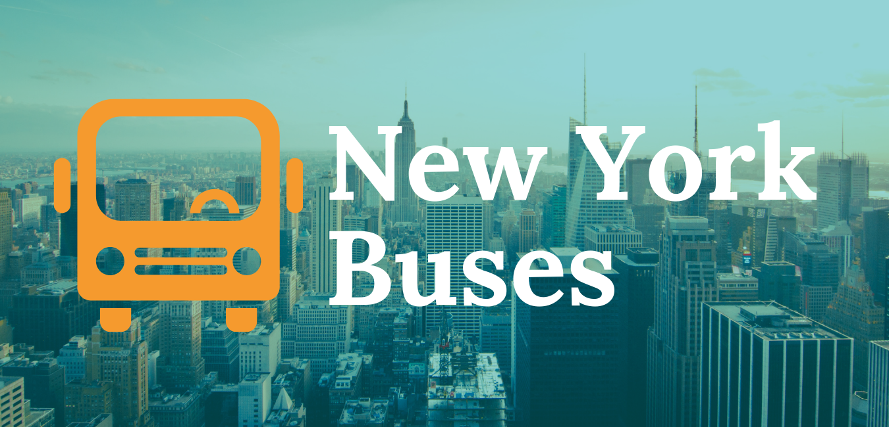
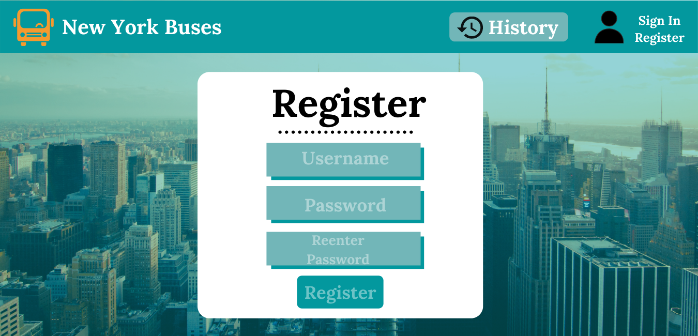
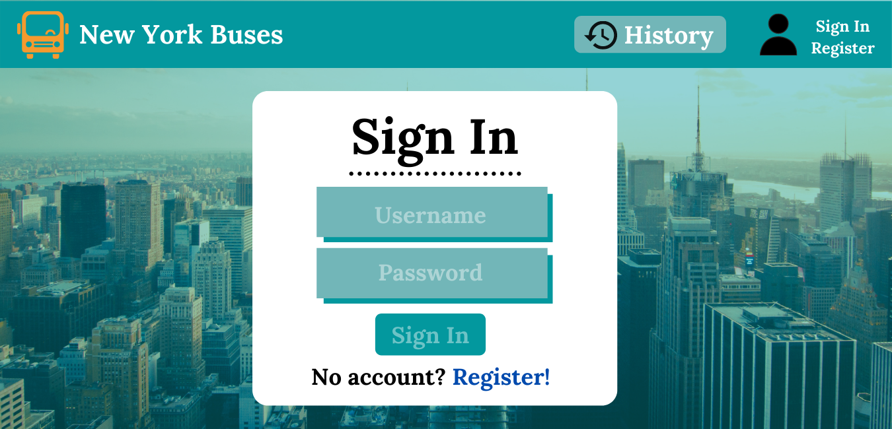
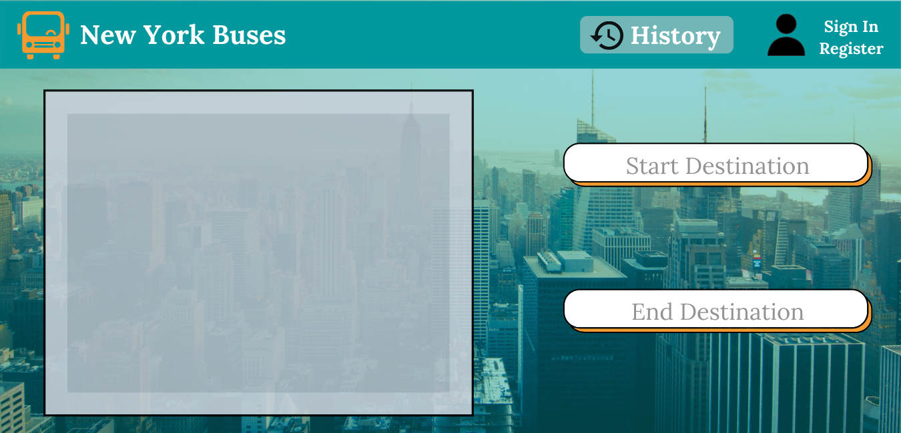
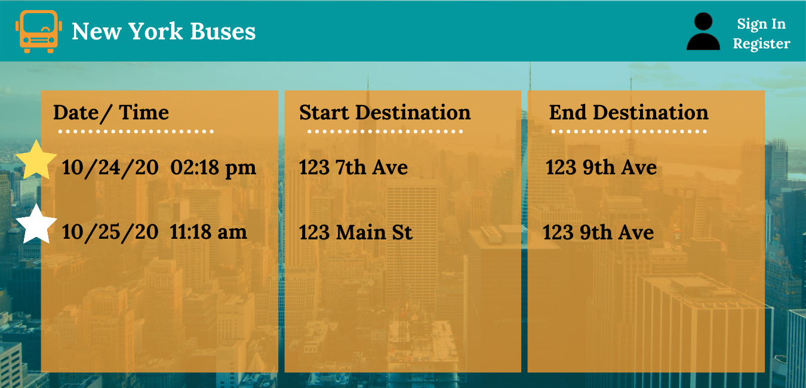

New York Buses
About the Project
New York Buses is set to release our all-new website, allowing commuters to live-track their train, doing away with the stress of possibly missing their ride. Using MTA's API, we have built a comprehensive website for the people of New York to stay up to date with buses all over the city. Using our website, commuters will never have to miss another train again!
Role: Product Owner, UI/UX Designer, Full-stack Developer
Duration: Sept 2020 - Mar 2021
UI Design
We wanted to create a webstie that was mobile-friendly so it is accessible to use on the go. The main functionality is the map page where users can input their start and end destination to get a list of bus timestatmps near them. The other functionality is a history page where users can save their history with a registered account.
   Key Challenges:
Data migration from API to the website
Integration of HTML/CSS to Django frameworks
Improving accessibility
Results
Minimal Viable Product
Final Product